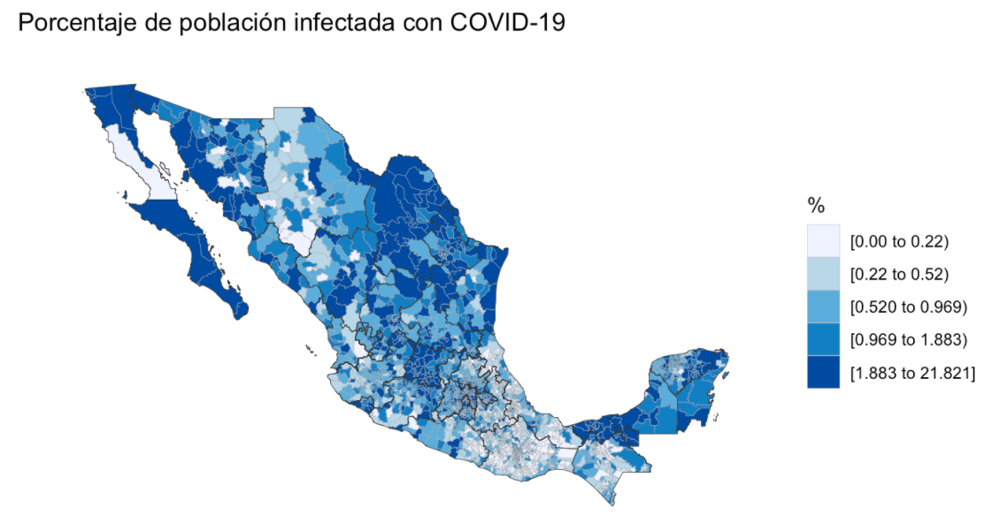

Estados de México con mayor tasa de contagios por casos de COVID-19
En el mapa de infectados a nivel nacional podemos ver la distribución de casos en el país, si bien esta distribución no dice nada acerca de la mortalidad o supervivencia, nos permitirá establecer relaciones cuando la tasa de infección sea comparada con la de fatalidad.
Top 5 estados con mayor índice de contagios COVID-19
También mostramos el top 5 de estados con mayor número de casos y la distribución de los mismos a nivel municipal. Probablemente el que tengan mayor tasa de incidencia se deba a factores como: densidad poblacional, tipo de zona (turística, comercial, etc.), entre otros.